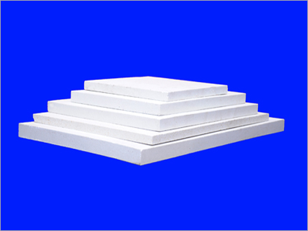
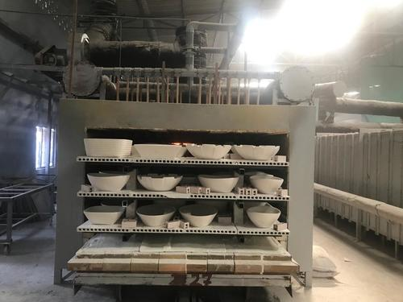

Plain Batts
Plain Batts are the most common type of primary kiln furniture, usually produced by semi-dry pressing, but can also be made by pressure-casting. Extruded batts can be split into ten sub-categories as follows: Extra Large Batt, Extra Thin Batt,etc

Profile Setters
Setters are special items of kiln furniture which, in the ceramic tableware industry, are shaped (generally on their upper surface) to conform with the under surface of plates and dishes.
Extruded Batts
Extruded batts have a part-hollow section which means that less energy is needed to heat each batt when compared to solid batts. They can also be perforated to allow extra heat flow.
Cordierite Kiln Furniture
Cordierite Kiln Furniture and kiln plates can be used for firing of products across a wide range of applications and industries.Kiln furniture is a generic term to describe products used to support an item during a heat treatment process.

Kiln Furniture
Kiln furniture is used in heating processes in the production of individual pieces such as ceramic or metal components. The kiln furniture carries the charge and is intended to ensure that the components neither deform nor stick to one another.